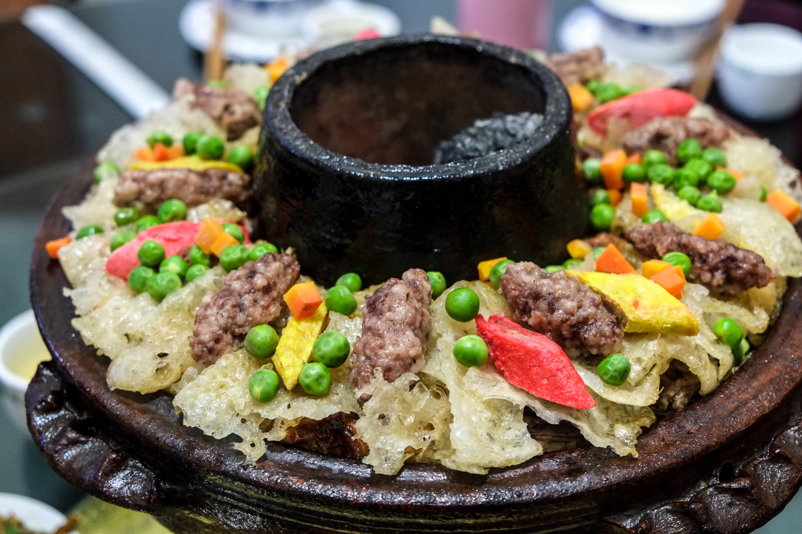
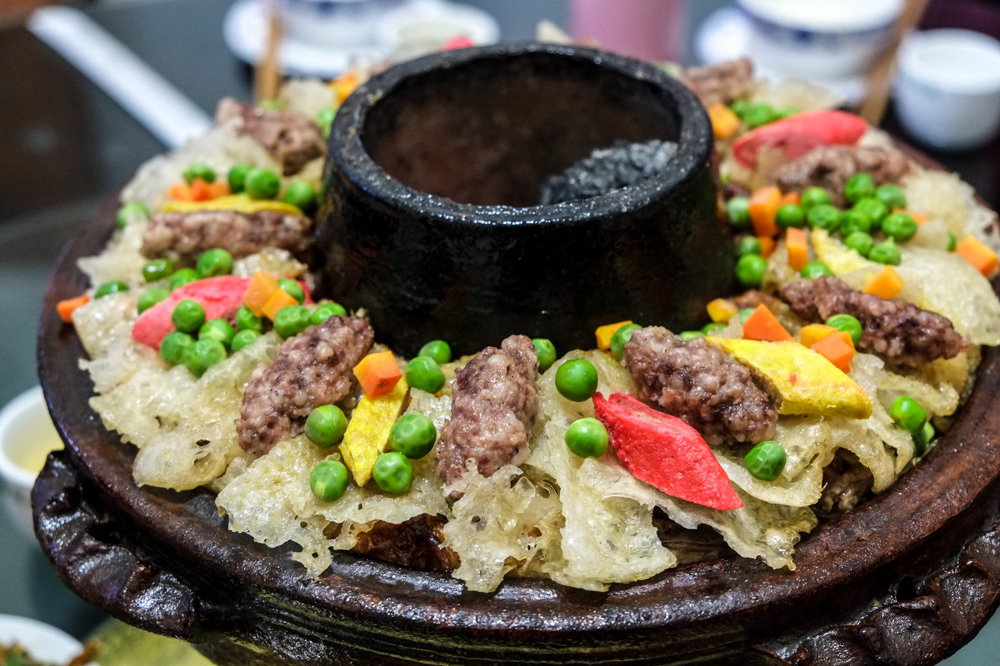
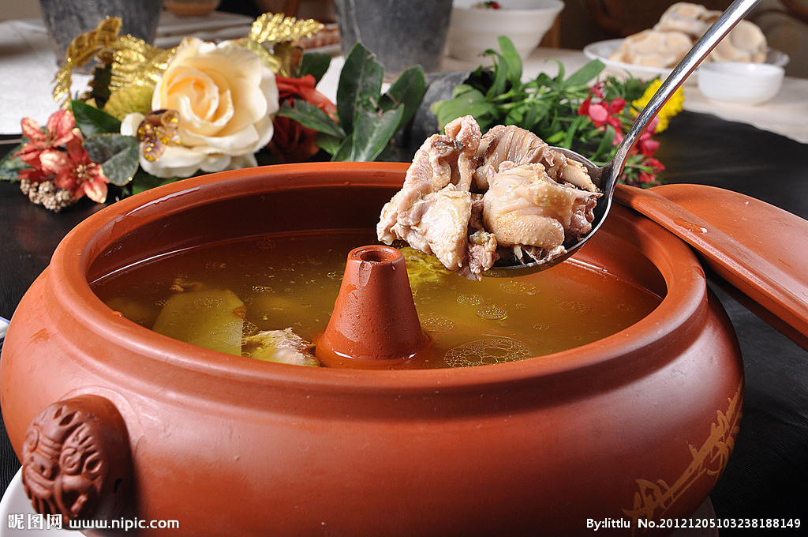
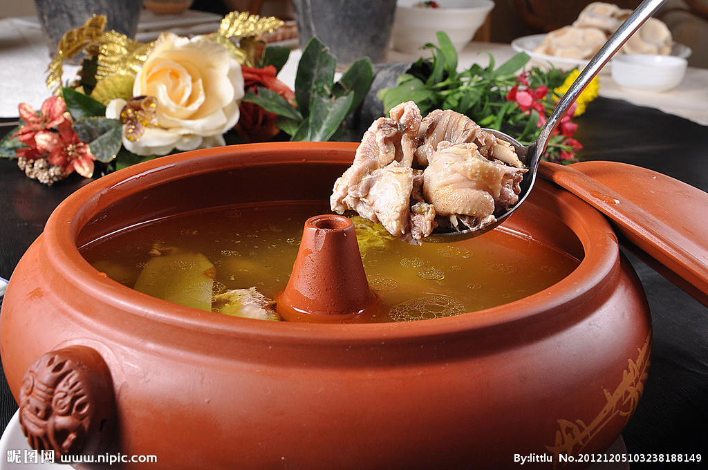

 


特色美食
-

过桥米线
过桥米线是云南滇南地区特有的汉族小吃，属滇菜系。过桥米线起源于蒙自地区。过桥米线汤是用大骨、老母鸡、云南宣威火腿经长时间熬煮而成的。
-

宣威火腿
宣威火腿，云南省著名汉族特产之一，因产于宣威而得名。它的主要特点是：形似琵琶，只大骨小，皮薄肉厚肥瘦适中；切开断面，香气浓郁，色泽鲜艳...
-

汽锅鸡
汽锅鸡是云南的名菜之一，早在2000多年前就在滇南民间流传。建水出产一种别致的土陶蒸锅，叫“汽锅”，是专门用来蒸食物的。
-

香竹饭
香竹饭具有浓郁的傣族风味，叫香竹。傣族人先将香竹的竹节作底砍下，然后将泡过的糯米放进竹筒，用芭蕉叶塞住竹筒口，用水浸泡15分钟...
-

油炸豌豆粉
豌豆粉是云南当地人十分喜爱的杂粮制品。加入剪好的油条泡在里面，淋上少量当地人特制的酱料和辣子，吃时洒上椒盐，热热的喝下去营养还利于消化。
-

红烧鸡枞
红烧鸡枞是昆明特有的一道名菜。鸡枞是云南特产的名贵野生食用菌，味道鲜、甜、嫩、香，简直可以和鸡肉相媲美，还能养胃、提神
-

青椒松茸
松茸是一种名贵的食用菌。肉质肥厚，香气浓郁，风味绝佳，由于含有很高的营养价值特殊的药用效果，有强身、益肠胃、止痛、理气化痰、驱虫等功效。
-

宜良烧鸭
宜良烧鸭已有600多年的历史，足可与北京烤鸭媲美，烧鸭又分仔鸭和肥鸭两种，仔鸭，肉质细嫩，食味香甜；肥鸭油脂较多，肉质老香，若配以葱白....